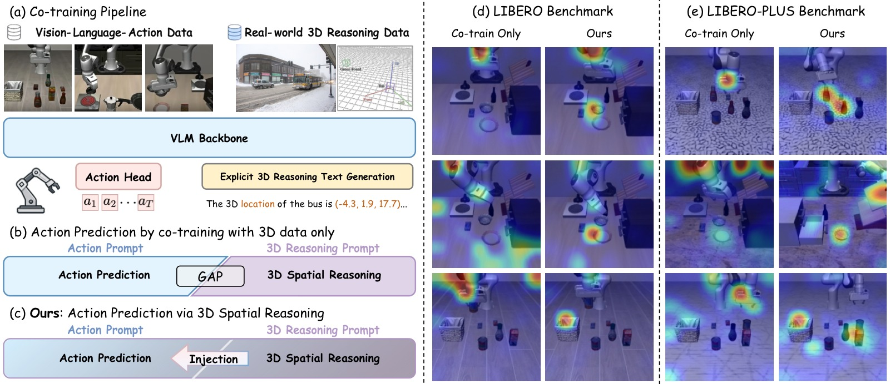
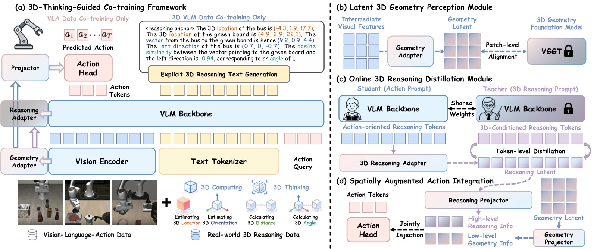
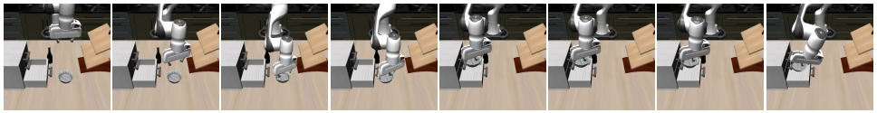
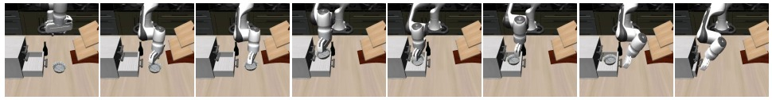
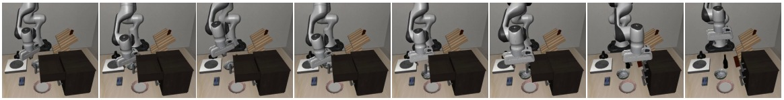
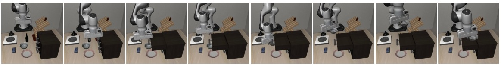
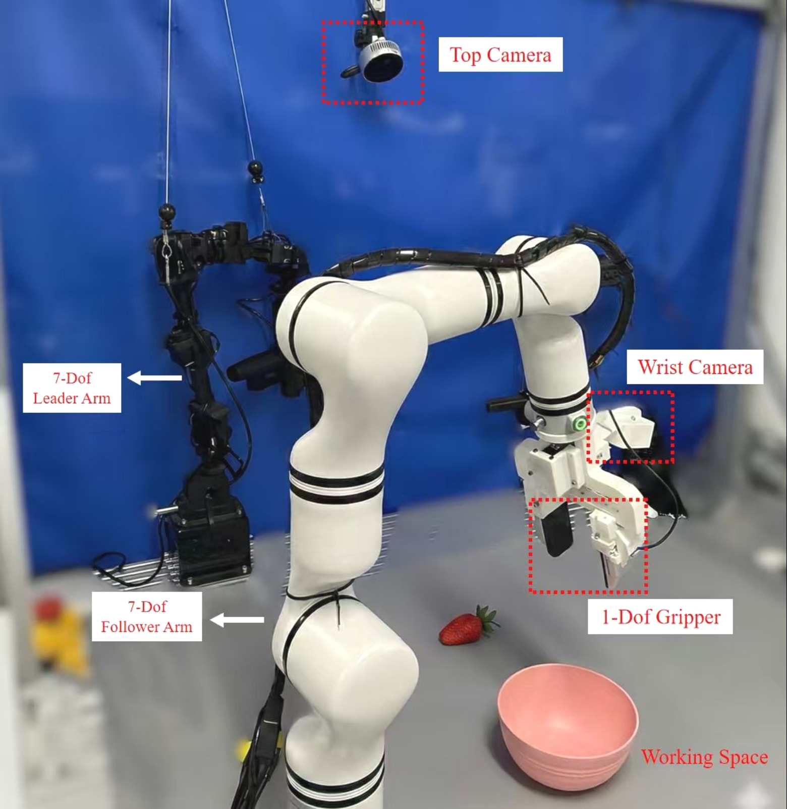
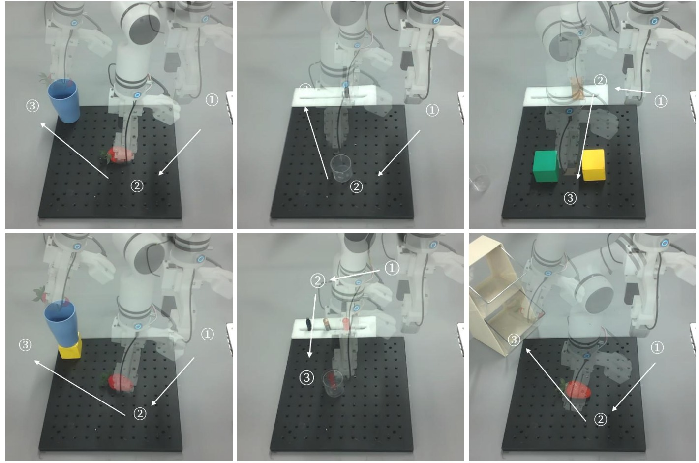
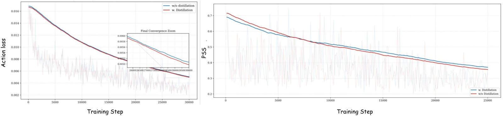

%% mathjax-macros %% end-mathjax-macros
3DThinkVLA: Endowing Vision-Language-Action Models with Latent 3D Priors via 3D-Thinking-Guided Co-training
论文信息 - 作者：Jiaxin Shi (上海交大), Xidong Zhang (哈工大/大湾区大学), Fucai Zhu, Zhe Li (南洋理工), Siyu Zhu (复旦), Weihao Yuan (南京大学/大漠机器人) - 通讯作者：Weihao Yuan - 投稿方向：NeurIPS 2026 (Main Track, camera-ready) - arXiv ID：arXiv-2606.04436 - 代码：即将公开 - 机构：上海交通大学、哈尔滨工业大学、南洋理工大学、复旦大学、南京大学、大漠机器人、大湾区大学
一、核心问题
现有 VLA 模型的 3D 空间推理瓶颈。 当前 Vision-Language-Action (VLA) 模型主要依赖 2D 图像作为视觉输入，缺乏对 3D 空间结构的理解和推理能力。现有解决方案存在以下局限：
- 显式 3D 注入方法：将点云、深度图等显式 3D 信息注入 action head 或 VLM backbone，但依赖外部 3D 传感器，且需要修改 VLM 架构。
- 隐式对齐方法：将 VLM 视觉特征与 3D 基础模型对齐，但直接对齐会破坏 VLM 原有的视觉-语言对齐。
- 关键盲区：上述方法都只关注低层几何信息注入，缺乏高层 3D 空间推理能力（如推断物体位置、相对朝向等）。
本文发现的核心问题：Prompt 诱导的推理鸿沟 (Prompt-Induced Reasoning Gap)。 当使用标准 3D VQA prompt 时，模型能成功激活空间推理能力；但使用简单的动作预测 prompt 时，模型会绕过已学到的空间先验，退化为"动作捷径 (action shortcut)"，注意力散焦到与任务无关的区域（如机械臂本身）。

图1：研究概览。(a) 框架在 VLA 数据和真实世界 3D 推理数据上 co-train VLM backbone，增强具身空间智能。(b) 论文识别的核心问题——prompt 诱导的推理鸿沟：vanilla co-training 中，动作 prompt 触发时模型倾向于学习动作捷径并关闭空间感知。(c) 3DThinkVLA 通过 reasoning adapter 和在线潜在蒸馏将 3D 空间思维注入动作预测，无需显式文本生成。(d)-(e) LIBERO 和 LIBERO-PLUS 上的定性结果：仅 co-training 的模型注意力散焦或聚焦于任务无关区域（如机械臂），而 3DThinkVLA 精准关注与任务相关的物体及其 3D 空间结构，从而实现更稳健的操作。
二、核心思路 / 方法
总体框架
3DThinkVLA 的核心洞察是：3D 几何感知 (geometry perception) 和 3D 空间推理 (spatial reasoning) 是两种可解耦的能力，应在模型的不同特征层级分别注入。
框架包含三个紧密耦合的组件：
- Latent 3D Geometry Perception Module：在 vision encoder 中间层注入低层几何先验
- Online 3D Reasoning Distillation Module：通过共享 anchor token，将高层空间推理从 teacher 的推理 prompt 迁移到 student 的动作 prompt
- Spatially Augmented Action Integration：将解耦的几何特征和推理特征联合注入 action head

图1：3DThinkVLA 框架总览。(a) VLM backbone 在 VLA 数据和 3D 推理数据上联合训练 (co-training)，将空间智能内化到模型中。(b) Geometry Adapter 通过 patch 级别的 latent alignment，将中间层视觉特征与 3D 基础模型 (VGGT) 对齐，捕获低层几何先验。(c) Online Distillation 通过共享 anchor token，将 teacher 的显式空间推理迁移到 student 的动作预测路径，弥合 prompt 诱导的推理鸿沟。(d) 解耦的推理特征和几何特征以层级化空间条件的形式联合注入 action head，防止动作捷径。推理时，辅助模块全部丢弃，仅保留轻量 adapter，实现从 2D 图像的高效隐式 3D 推理。
2.1 问题定义
VLA 策略 $\pi$ 将多视角观测 $I_t$、语言指令 $L$ 和 action queries $\tau_A$ 映射为动作块 $A_t = [a_t, a_{t+1}, \dots, a_{t+H-1}]$，每个动作 $a_t \in \mathbb{R}^7$ 包含 7-DoF 末端执行器指令（3 平移 + 3 旋转 + 1 夹爪状态）。
Backbone 采用 Qwen3-VL-2B，action head 采用 OFT 风格。
2.2 Latent 3D Geometry Perception（潜在 3D 几何感知）
Geometry Adapter 由 MLP + LayerNorm 构成，作为几何信息与视觉语义特征之间的桥梁。具体做法：
- 从 vision encoder 的第 18 层提取中间视觉特征 $\mathcal{F}_v \in \mathbb{R}^{B \times C \times H_v \times W_v}$
- 轻量 MLP 将视觉特征投影到几何潜在空间
- 与 3D 基础模型 VGGT 的输出特征 $\mathcal{F}^{3D}$ 进行 patch 级对齐
对齐损失使用余弦相似度：
其中 $\mathcal{F}^{\text{Geo}} = \mathcal{G}(\mathcal{F}_v)$ 为 geometry adapter 的输出，$\mathcal{S}$ 为余弦相似度。
关键设计：不对 VLM backbone 做架构修改，仅在中间特征层外挂轻量 adapter，保护了原有视觉-语言对齐。
2.3 Online 3D Reasoning Distillation（在线 3D 推理蒸馏）
这是本文最核心的创新。为了弥合 prompt 诱导的推理鸿沟，设计了一个完全在潜在空间中运作的 teacher-student 蒸馏方案。
共享 Reasoning Anchor Token $\tau_R$：
- 在 task instruction 之后插入 $\tau_R$
- 在 causal attention 下，该位置使 anchor 能吸收视觉观察和任务语义，同时不受下游 action decoding 的影响
- 动作预测变为：$\hat{A}_t = \pi_\Theta(I_t, L_{\text{task}}, \tau_R, L_{\text{action}}, \tau_A)$
Teacher 分支：
- 使用显式 3D 空间推理 prompt $L_{\text{teacher}}$ 激活 VLM 的空间推理
- 收集 anchor token 的隐状态：$H_{\text{teacher}}^R = \text{sg}(f_\theta(I_t, L_{\text{task}}, L_{\text{teacher}}, \tau_R))$
- 对 teacher 分支 stop gradient，保持其推理能力并加速训练
Student 分支：
- 使用标准动作预测 prompt，收集 anchor token 隐状态：$\hat{H}_{\text{student}}^R = f_\theta(I_t, L_{\text{task}}, \tau_R, L_{\text{action}}, \tau_A)$
蒸馏损失：通过 Reasoning Adapter $\mathcal{R}$（轻量 MLP + LayerNorm）将 student anchor 投影到推理潜在空间：
关键特性：
- Teacher 和 student 共享参数，无需额外模型提供蒸馏信号
- 不需要慢速的逐 token 生成对齐
- token 特征分布相似，提高蒸馏稳定性
- 推理时不需要 teacher 分支
2.4 Spatially Augmented Action Integration（空间增强的动作集成）
将几何特征和推理特征联合注入 action head：
- 两个额外轻量 MLP 将 geometry latent 和 reasoning latent 投影到 action latent 空间，得到 $H_{\text{geo}}^A$ 和 $H_{\text{reasoning}}^A$
- 通过逐元素加法注入 action-query token：
- 随机 dropout 部分样本的 $H_{\text{geo}}^A$ 和 $H_{\text{reasoning}}^A$，防止过拟合
- 消融实验证明加法融合优于 Cross-Attention 和 Gate 融合
2.5 训练目标与推理
Co-training 策略：每个训练 step 执行两次前向传播（一次 VLM 数据 + 一次 VLA 数据），梯度累积后一次反向更新。
VLA-step 目标：
其中 $\mathcal{L}_{\text{action}}$ 为预测动作块与真值的 L1 距离，$\lambda_a = \lambda_d = 0.5$。
VLM-step 目标：在 3D VLM 数据上，要求模型将 reasoning-anchor token 作为第一个输出 token 发出，后续 3D 推理文本在该 anchor 条件化下生成，从而强化 anchor 的 3D 空间推理表征。
总损失：$\mathcal{L}_{\text{total}} = \mathcal{L}_{\text{vla}} + \mathcal{L}_{\text{vlm}}$，其中 $\lambda_{\text{3D}} = 0.1$。
推理时：仅保留轻量 geometry adapter 和 reasoning adapter，丢弃 VGGT、teacher 分支等所有辅助模块。模型仅需 2D 图像输入，无需 3D 传感器或显式 CoT 文本生成。
三、训练数据
VLA 数据：LIBERO 各任务套件（每任务 50 条人类遥操作演示）。
3D 推理 Co-training 数据：来自 Spatial Reasoner 数据集，基于 OpenImages 自然图像构建：
- SAM2 获取实例 mask
- Depth Anything V2 估计深度
- 姿态估计算法获取 3D 坐标和朝向
- 严格几何计算生成空间关系标签（3D 欧氏距离、方向向量夹角等）
包含三个难度递增的子集：
- Basic3D-QA：仅查询物体位置或基于已知坐标的简单计算
- SpatialReasoning-QA：常规 3D 空间 VQA，直接输出答案
- SpatialReasoning-CoT：要求生成完整 CoT，包括中间 3D 解析和几何计算
训练时混合 24,000 SR-CoT 样本 + 24,000 LLaVA 通用图文指令数据，防止灾难性遗忘。
训练配置：8 × NVIDIA A100 (80GB)，bfloat16 混合精度，AdamW 优化器，base lr = 2.5e-5，action head lr = 2.0e-4，cosine 调度，gradient clipping = 1.0。
四、实验与结果
4.1 LIBERO Benchmark
| 方法 | Spatial | Object | Goal | Long | Avg |
|---|---|---|---|---|---|
| OpenVLA | 84.7 | 88.4 | 79.2 | 53.7 | 76.5 |
| CoT-VLA | 87.5 | 91.6 | 87.6 | 69.0 | 83.9 |
| $\pi_0$ | 96.8 | 98.8 | 95.8 | 85.2 | 94.2 |
| OpenVLA-OFT | 97.6 | 98.4 | 97.9 | 94.5 | 97.1 |
| SpatialVLA | 88.2 | 89.9 | 78.6 | 55.5 | 78.1 |
| GeoVLA | 98.4 | 99.0 | 96.6 | 96.6 | 97.7 |
| 3D-CAVLA | 98.2 | 99.8 | 98.2 | 96.1 | 98.1 |
| SpatialForcing | 99.4 | 99.6 | 98.8 | 96.0 | 98.5 |
| VITA | 95.9 | 98.9 | 95.1 | 96.8 | 96.7 |
| 3DThinkVLA | 100.0 | 100.0 | 98.8 | 95.8 | 98.7 |
3DThinkVLA 在 Spatial 和 Object 两个套件上达到 100% 成功率，平均 98.7% 为所有方法最优。
4.2 LIBERO-PLUS（零样本泛化）
在 LIBERO 上训练后直接迁移到 LIBERO-PLUS（7 种扰动维度），零样本评估：
| 方法 | Camera | Robot | Lang. | Light | Bg. | Noise | Layout | Avg |
|---|---|---|---|---|---|---|---|---|
| OpenVLA | 0.8 | 3.5 | 23.0 | 8.1 | 34.8 | 15.2 | 28.5 | 15.6 |
| OpenVLA-OFT | 56.4 | 31.9 | 79.5 | 88.7 | 93.3 | 75.8 | 74.2 | 69.9 |
| ABot-M0 | 60.4 | 67.9 | 86.4 | 96.2 | 91.6 | 86.4 | 82.6 | 80.5 |
| Qwen3-VL-OFT | 47.0 | 60.1 | 87.0 | 96.3 | 95.3 | 73.1 | 79.2 | 75.0 |
| 3DThinkVLA | 73.8 | 64.5 | 78.0 | 98.4 | 94.8 | 84.7 | 81.5 | 81.0 |
平均 81.0%，尤其在 Camera 扰动（+13.4%）和 Light 扰动上大幅领先。与基线 Qwen3-VL-OFT 相比，涉及高度变化的轨迹上优势明显。




图2-5：LIBERO-PLUS 上的定性对比。Task 1："把黑色碗放进柜子底部抽屉并关上。" Task 2："把黑色碗放进柜子顶部抽屉并关上。" Qwen3-VL-OFT 频繁错误估计物体的高度，导致碰撞周围物体或错误判断目标位置。3DThinkVLA 持续产出准确的高度感知预测，证明 3D 空间推理是处理高度变化扰动的关键能力。
4.3 SimplerEnv
| 方法 | Carrot | Eggplant | Spoon | Stack | Avg |
|---|---|---|---|---|---|
| Octo | 8.3 | 43.1 | 12.5 | 0.0 | 16.0 |
| OpenVLA | 0.0 | 4.1 | 0.0 | 0.0 | 1.0 |
| Open $\pi_0$ | 61.3 | 89.6 | 73.7 | 15.8 | 60.0 |
| QDepth-VLA | 57.5 | 95.0 | 82.0 | 39.6 | 68.5 |
| UniVLA | 83.3 | 66.7 | 33.3 | 95.8 | 69.8 |
| VITA | 68.8 | 95.6 | 84.2 | 37.5 | 71.5 |
| 3DThinkVLA | 75.0 | 95.8 | 87.5 | 33.3 | 72.9 |
平均 72.9%，超越所有之前方法，验证了框架的广泛适用性。
4.4 消融实验
| ID | Co-train | Geo Adapter | Reason Adapter | Reason Anchor | Spatial | Object | Goal | Long | Avg |
|---|---|---|---|---|---|---|---|---|---|
| R1 | — | ✗ | ✗ | ✗ | 93.6 | 99.6 | 97.4 | 92.6 | 95.8 |
| R2 | 2D Data | ✗ | ✗ | ✗ | 96.8 | 99.8 | 98.0 | 95.0 | 97.4 |
| R3 | 3D Data | ✗ | ✗ | ✗ | 99.8 | 100.0 | 98.8 | 93.0 | 97.9 |
| R4 | 3D Data | ✓ | ✗ | ✗ | 99.0 | 100.0 | 98.2 | 95.8 | 98.3 |
| R5 | 3D Data | ✓ | ✓ | ✗ | 99.6 | 100.0 | 98.8 | 95.8 | 98.6 |
| R6 | 3D Data | ✓ | ✗ | ✓ | 99.2 | 100.0 | 99.4 | 94.4 | 98.3 |
| R7 | 3D Data | ✓ | ✓ | ✓ | 100.0 | 100.0 | 98.8 | 95.8 | 98.7 |
关键发现：
- R1→R2/R3：Co-training 带来显著提升（95.8→97.4/97.9），3D co-training 优于 2D co-training
- R3→R4：Geometry adapter 在 Long 套件上改进最大（93.0→95.8），说明几何先验对长程操作任务特别有益
- R4→R6：Reasoning anchor 主要改善 Goal 套件（98.2→99.4），表明显式推理锚定对目标导向决策尤其有帮助
- R5/R6→R7：完整模型达到最佳性能，几何感知和推理蒸馏互补——前者提供稳定的几何空间线索，后者增强任务相关的推理信号
4.5 真实机器人实验


图6-7：真实机器人实验设置。(a) Realman 机器人平台，配备 7-DoF 机械臂、1-DoF 夹爪、顶部相机和腕部相机。(b) 三个真实世界任务：Task 1 测试高度变化下的泛化能力；Task 2 评估透明容器识别能力（将物体放入透明容器）；Task 3 考察空间位置理解能力（将物体放置在指定空间位置）。所有模型每任务训练 100 episodes，每个变体评估 50 次（共 150 次试验）。
| 方法 | Task 1 (高度变化) | Task 2 (透明容器) | Task 3 (空间位置) |
|---|---|---|---|
| $\pi_0$ | 63.3% | 82.0% | 51.3% |
| OpenVLA-OFT | 28.0% | 57.3% | 30.7% |
| 3DThinkVLA | 88.0% | 93.3% | 61.3% |
在所有三个任务上显著优于基线方法，尤其在高度变化场景 (+24.7%) 和透明容器场景 (+11.3%) 上。Task 3 的空间位置理解对所有方法仍具挑战性。
五、关键洞察与技术亮点
5.1 Prompt 诱导的推理鸿沟
本文首次系统性地识别和刻画了这一现象：标准动作预测 prompt 会使模型"关闭"其在 VLM 预训练和 3D co-training 中学到的空间推理能力，退化为简单的视觉-动作映射。这解释了为什么简单的 co-training 不足以充分利用 3D 先验。
5.2 解耦几何感知与空间推理
将 3D 能力拆分为两个层次：
- 低层几何感知（"这个像素对应什么深度/3D 结构？"）→ 在 vision encoder 中间层对齐
- 高层空间推理（"物体 A 在物体 B 的左边吗？距离多远？"）→ 在 reasoning anchor token 中编码
两者通过特征层次的分离避免了互相干扰，又通过 additive fusion 在 action head 中互补。
5.3 共享 Anchor 的在线潜在蒸馏
相比传统的显式 CoT 文本蒸馏（慢、不稳定、文本-动作空间域差距大），本文的潜在空间蒸馏：
- 无需逐 token 文本生成（速度快）
- Teacher-student 共享参数（无需额外模型）
- 在 latent space 中对齐（避免文本-动作域差距）
- 消融实验证明优于 privileged information 蒸馏
5.4 梯度层面的协同效应

图8：训练 action loss 曲线 (a) 和 Projection-Space Similarity 分析 (b)。蓝色曲线为使用 online 3D reasoning distillation module，红色曲线为仅 3D co-training。采用投影空间相似度 (PSS) 度量 VLM 任务和 VLA 任务在共享参数空间中的优化一致性。PSS 计算两个任务梯度的正交投影矩阵之间的重叠度，值越大表示优化方向越一致。3D co-training 使 PSS 维持在约 0.4 的正值，表明任务间存在稳健的协同效应。引入 online reasoning distillation 进一步加速收敛并提升 PSS，确认该方法有效促进动作预测与 VLM 优化的梯度非冲突。
六、代码实现解读（待代码公开后补充）
论文代码尚未公开，以下基于论文描述的架构推演：
┌─────────────────────────────────────────────────────────┐
│ Training Loop │
├─────────────────────────────────────────────────────────┤
│ ┌──────────────┐ ┌──────────────┐ │
│ │ VLM Batch │ │ VLA Batch │ │
│ │ (3D QA + │ │ (Robot │ │
│ │ General) │ │ Demo Data) │ │
│ └──────┬───────┘ └──────┬───────┘ │
│ │ │ │
│ ▼ ▼ │
│ ┌──────────────────────────────────────┐ │
│ │ Qwen3-VL-2B Backbone (shared) │ │
│ │ ┌─────────────────────────────────┐ │ │
│ │ │ Vision Encoder (18th layer ───┐│ │ │
│ │ │ intermediate features) ││ │ │
│ │ └───────────────────────────────┬┘│ │ │
│ │ │ │ │ │
│ │ ┌───────────────────────────────▼┐ │ │ │
│ │ │ LLM Backbone │ │ │ │
│ │ │ [τ_R anchor token inserted] │ │ │ │
│ │ └───────────┬───────────────────┬┘ │ │ │
│ └──────────────┼───────────────────┼──┘ │
│ │ │ │
│ ┌────────────▼──────┐ ┌───────▼────────┐ │
│ │ Geometry Adapter │ │ Reasoning │ │
│ │ (MLP + LayerNorm) │ │ Adapter │ │
│ │ │ │ (MLP+LayerNorm)│ │
│ │ Align with VGGT │ │ Distill from │ │
│ │ (3D foundation) │ │ teacher τ_R │ │
│ └────────┬───────────┘ └───────┬────────┘ │
│ │ │ │
│ └───────┬───────────────┘ │
│ │ │
│ ▼ │
│ ┌──────────────────────────────────────┐ │
│ │ Spatially Augmented Action Head │ │
│ │ H_A + H_geo^A + H_reasoning^A → Â_t │ │
│ └──────────────────────────────────────┘ │
│ │
│ Losses: │
│ L_total = L_action (L1) + λ_a·L_geo (cosine) │
│ + λ_d·L_reasoning (cosine) + λ_3D·L_CE │
└─────────────────────────────────────────────────────────┘
┌─────────────────────────────────────────────────────────┐
│ Inference Path │
├─────────────────────────────────────────────────────────┤
│ 2D Images → Vision Encoder → LLM │
│ [L_task, τ_R, L_action, τ_A] → Action Head → Â_t │
│ │
│ ✗ No VGGT (discarded) │
│ ✗ No teacher branch (discarded) │
│ ✗ No CoT text generation │
│ ✓ Only lightweight geometry + reasoning adapter kept │
└─────────────────────────────────────────────────────────┘
关键模块映射
| 论文公式/组件 | 推测代码位置 | 功能描述 |
|---|---|---|
| Geometry Adapter $\mathcal{G}$ | geometry_adapter.py |
MLP + LayerNorm，对齐 visual features ↔ VGGT |
| Reasoning Adapter $\mathcal{R}$ | reasoning_adapter.py |
MLP + LayerNorm，投影 student anchor → reasoning latent |
| Action Head (OFT-style) | action_head.py |
从 action-query tokens 的隐状态预测 7-DoF 动作 |
| $\mathcal{L}_{\text{geo}}$ | losses.py |
余弦相似度损失，patch 级对齐 |
| $\mathcal{L}_{\text{reasoning}}$ | losses.py |
余弦相似度损失，token 级蒸馏 |
| Co-training loop | train.py |
每 step 两次 forward（VLM + VLA），梯度累积 |
七、局限性
- 训练开销增加 50%：由于集成了 co-training 和 self-distillation，使用 8 张 A100、batch size 32 时，训练时间为同规模 vanilla VLA 的 1.5 倍。
- 真实机器人 Task 3 仍有提升空间：空间位置理解任务（Task 3）上 3DThinkVLA 仅达 61.3%，说明精确空间定位对当前方法仍有挑战。
- 依赖 3D 推理数据质量：co-training 使用的 Spatial Reasoner 数据依赖 SAM2、Depth Anything V2 等模型的质量，伪标签噪声可能影响训练。
- Long 套件性能略低于最佳：LIBERO-Long 上 95.8%，略低于 VITA 的 96.8%，长程任务的 3D 推理仍有改进空间。
八、关键概念速查
| 概念 | 解释 |
|---|---|
| Prompt-Induced Reasoning Gap | 动作预测 prompt 无法激活 VLM 已学到的空间推理能力，导致模型退化为视觉-动作捷径 |
| Reasoning Anchor Token $\tau_R$ | 在 task instruction 后插入的特殊 token，作为 teacher-student 蒸馏的共享瓶颈 |
| Geometry Adapter | 轻量 MLP，将 vision encoder 中间特征对齐到 3D 基础模型 (VGGT) 的几何特征空间 |
| Reasoning Adapter | 轻量 MLP，将 student anchor token 投影到推理潜在空间以匹配 teacher |
| Online Latent Distillation | 在潜在空间中进行 teacher-student 对齐，无需显式文本生成，teacher 和 student 共享参数 |
| Spatially Augmented Action Integration | 将几何特征和推理特征以加法方式注入 action-query tokens，层级化空间条件 |
| Co-training | 每个训练 step 同时处理 VLA 数据和 3D VLM 数据，梯度累积后统一更新 |
| PSS | Projection-Space Similarity，度量两个任务梯度子空间的重叠度，值越大表示优化方向越一致 |
| VGGT | 3D 基础模型，提供几何特征用于 geometry adapter 的对齐监督 |